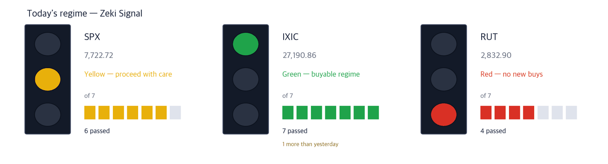

Dow 51,177 +0.49% | Nasdaq Comp. 27,191 +1.19% | S&P 500 7,723 +0.73% | Russell 2000 2,833 +0.94% | 10-yr Treasury 5.27% +0.04%p | Zeki Signal Yellow |

Green favours buying, yellow says wait, red says hold off. The cells count how many of seven conditions are met - more cells mean the advance is broader. This signal uses the October 2 close. The Nasdaq Composite met all seven conditions and turned green, one more than the day before. The S&P 500 met six and stays yellow; the Russell 2000 met four and stays red. The three indexes combined read yellow.
Wait — the stance the signal implies.
On October 2 the Nasdaq Composite rose 1.19% to 27,190.86, its second-highest close on record. The S&P 500 gained 0.73% and the Dow 0.49%. For the week only the Nasdaq was higher, up 0.45%; the S&P 500 and the Dow fell. (IBD, The Wall Street Journal)
The trigger was the September jobs report. Payrolls rose 29,000, far short of the 85,000 expected. Unemployment ticked up to 4.2%, and August was revised down to 133,000. The odds of a rate hike this month stand at 24%, down from 64% a week ago. (IBD)
Long-term yields did not follow. The 10-year yield fell after the report, then turned higher to close at 5.27%. Oil is pushing rates up, and heavy government debt makes that risk larger, one analysis argued. (The Wall Street Journal, IBD)
① On Monday, watch first whether Nvidia holds its new high. It hit an all-time high of $234.76 on October 2. As yields turned higher it closed at $233.95, near the day's low. (IBD)
② Only the Nasdaq is green. If you buy, spread it over a few names and add slowly. The S&P 500 is 0.85% above its 50-day average of 7,657.64. The Russell 2000 and the Dow sit not far above their 200-day averages. (IBD)
③ Two hard-drive makers fell more than 10% in a day. Reports said rival Toshiba plans a major expansion of hard-drive output. Seagate Technology fell 10.21% and Western Digital 10.22%. This digest listed Seagate as well grounded on October 2. (IBD)
One number - 29,000 jobs in September, about a third of the forecast. Unemployment of 4.2% is still historically low, so the Fed is expected to keep its focus on inflation. (IBD, The Wall Street Journal)
| Date | What to watch | What it changes |
|---|---|---|
| Sun 4, 6pm ET | Stock-index futures reopen | The first read on direction after the weak jobs report |
| Oct. 5 (Mon) open | First session after the jobs report | If the Nasdaq record holds, green can spread to the other indexes |
| Oct. 27-28 | Fed rate decision | Hike odds have fallen sharply since the jobs report. Inflation data will move them again |
With hike fears fading, chips led. The main semiconductor ETF rose nearly 4% on the week. In the Nasdaq-100 on October 2, Arm, Teradyne and Monolithic Power each rose more than 5%. (IBD)
The issue is long-term rates. The 2-year yield fell 0.04 point on the week, while the 10-year rose nearly 0.10 point. Chip stocks priced on distant profits are the most sensitive to long rates. (IBD)
| Close | Day | Week | 20 sessions |
|---|---|---|---|
| $233.95 | +1.34% | +3.95% | +2.41% |
| 3 months | Zeki Strength | Zeki Flow | From high |
|---|---|---|---|
| +19.64% | 77 | A | -1.6% |
| Who | Nvidia, the maker of graphics chips for AI servers. |
| What | On Oct. 2 it traded above $234.76 to an all-time high. It closed up 1.34% at $233.95. |
| When | Oct. 2, the day of the jobs report. |
| Where | Listed on Nasdaq. It is the largest holding in the main semiconductor ETF. |
| Why | When rate-hike fears ease, investors discount distant profits less. |
| How | Volume was 1.10 times the 50-day average. It closed 1.6% below its one-year high. |
| Close | Day | Week | 20 sessions |
|---|---|---|---|
| $307.49 | +5.18% | -0.91% | +26.75% |
| 3 months | Zeki Strength | Zeki Flow | From high |
|---|---|---|---|
| -4.58% | 93 | B | -32.1% |
| Who | Arm Holdings, which licenses the designs inside phone and server chips. |
| What | It rose 5.18% on Oct. 2 to close at $307.49. |
| When | Oct. 2. |
| Where | Listed on Nasdaq. |
| Why | It earns a royalty on each chip built on its designs, so its sales follow chip volumes. |
| How | Volume was 1.13 times the 50-day average. It sits 32.1% below its one-year high. |
| Close | Day | Week | 20 sessions |
|---|---|---|---|
| $272.29 | +1.57% | +3.95% | +30.39% |
| 3 months | Zeki Strength | Zeki Flow | From high |
|---|---|---|---|
| +9.23% | 96 | A | -17.5% |
| Who | Marvell Technology, a maker of custom data-center chips and networking chips. |
| What | It closed up 1.57% at $272.29 on Oct. 2, after a 4% gain in the morning. |
| When | Oct. 2. |
| Where | Listed on Nasdaq. |
| Why | Cloud companies building their own AI chips design them with Marvell. |
| How | Volume was light at 0.68 times the 50-day average. It sits 17.5% below its one-year high. |
A growing band of investigators is tracking AI systems that misbehave. Another analysis found that the newest models show a widening gap between what they do and what they say they do. (The Wall Street Journal)
That is why security budgets are hard to cut. The software ETF (IGV) rose 2.3% on the week, and Palo Alto Networks is its largest holding. (IBD)
| Close | Day | Week | 20 sessions |
|---|---|---|---|
| $403.24 | +1.76% | +7.61% | +21.48% |
| 3 months | Zeki Strength | Zeki Flow | From high |
|---|---|---|---|
| +12.78% | 93 | B | -1.5% |
| Who | Palo Alto Networks, a seller of corporate firewalls and security software. |
| What | It gained 7.6% on the week to $403.24, clearing a prior high of $398.88. |
| When | It rose 1.76% on Oct. 2. |
| Where | Listed on Nasdaq. It is the largest holding in the software ETF (IGV). |
| Why | The more often AI systems misbehave, the more ground companies must defend. |
| How | Volume was 0.78 times the 50-day average. It sits 1.5% below its one-year high. |
| Close | Day | Week | 20 sessions |
|---|---|---|---|
| $211.49 | -0.54% | +8.35% | +24.10% |
| 3 months | Zeki Strength | Zeki Flow | From high |
|---|---|---|---|
| +42.32% | 95 | A | -2.4% |
| Who | Okta, which checks who - or which program - is logging in to a company's systems. |
| What | It gained 8.35% on the week to $211.49. It slipped 0.54% on Oct. 2. |
| When | As of the Oct. 2 close. |
| Where | Listed on Nasdaq. |
| Why | As AI programs log in on people's behalf, checking who is coming in comes first. |
| How | It is up 42.3% over three months. Volume on Oct. 2 was light at 0.57 times the 50-day average. |
Amazon pledged an extra $1 billion for communities where it builds data centers, to win over local opponents. (The Wall Street Journal)
Most power-equipment stocks did not follow. Vertiv Holdings has a Zeki Strength of 66 and Constellation Energy 24, and both have a trend gauge (the gap between the 25- and 50-day averages) below zero. Of the nine power-related names we checked, only Bloom Energy has a Zeki Strength above 90.
| Close | Day | Week | 20 sessions |
|---|---|---|---|
| $289.15 | +4.17% | +0.16% | +22.76% |
| 3 months | Zeki Strength | Zeki Flow | From high |
|---|---|---|---|
| -2.00% | 95 | C | -17.7% |
| Who | Bloom Energy, a maker of fuel-cell generators that sit beside the buildings they power. |
| What | It rose 4.17% on Oct. 2 to close at $289.15. |
| When | Oct. 2. |
| Where | Listed on the New York Stock Exchange. |
| Why | Data centers that cannot wait for a grid connection make their own power on site. |
| How | Volume was 0.77 times the 50-day average. It sits 17.7% below its one-year high. |
Seagate and Western Digital fell 10.21% and 10.22% on October 2 on reports that rival Toshiba plans a major expansion of hard-drive output. (IBD) Western Digital's trend gauge is below zero (-3.4% of price). Seagate's is still above zero, but it fell on volume 3.16 times the 50-day average. We will return once it is clear whether more supply pushes drive prices down.
One more set aside for the same reason - Blue Owl Capital. Redemption requests at two of its private-credit funds ran well above the usual 5% cap, as investors seek to pull another $4.2 billion. (The Wall Street Journal) Its Zeki Strength is 15 and its trend gauge is below zero.
| Name | ①up over 20 sessions | ②Strength 90+ | ③flow 3mo A or B | ④2wk not weaker | Met | Weight of evidence |
|---|---|---|---|---|---|---|
| NVDA | O | X | O | O | 3/4 | Needs checking |
| ARM | O | O | O | O | 4/4 | Well grounded |
| MRVL | O | O | O | O | 4/4 | Well grounded |
| PANW | O | O | O | O | 4/4 | Well grounded |
| OKTA | O | O | O | O | 4/4 | Well grounded |
| BE | O | O | X | O | 3/4 | Grounded |
The four columns ask: ① up over 20 sessions? ② Zeki Strength 90 or higher? ③ 3-month Zeki Flow A or B? ④ not weaker over the last 2 weeks? The count of O's sets the weight of evidence. Of today's 6 names, 5 met ② and 5 met ③.
The U.S. has no daily filing of how many shares foreigners or institutions bought. The grades below estimate buying pressure from price and volume; they are not a tally. Data run to the October 2 close.
| Name | Flow 3mo→2wk | Volume | How to read it |
|---|---|---|---|
| Accumulation 5 - A over 3 months, still buying over 2 weeks | |||
| Qorvo Inc QRVO | A → B ↓ | 3.08x | Caution — The grade is falling while volume rises |
| CarMax Inc KMX | A → B ↓ | 2.89x | Caution — The grade is falling while volume rises |
| Summit Therapeutics SMMT | A → A = | 2.19x | Watch✓ — Buying over both 3 months and 2 weeks |
| Accenture plc ACN | A → A = | 2.10x | Watch✓ — Buying over both 3 months and 2 weeks |
| Vail Resorts MTN | A → A = | 1.94x | Watch✗ — Buying over both 3 months and 2 weeks |
| Distribution 5 - E over 3 months, still selling over 2 weeks | |||
| Fair Isaac FICO | E → E = | 6.32x | Caution — Selling over both 3 months and 2 weeks, on rising volume |
| Nike Inc NKE | E → E = | 2.60x | Caution — Selling over both 3 months and 2 weeks, on rising volume |
| Annaly Capital Management NLY | E → E = | 2.34x | Caution — Selling over both 3 months and 2 weeks, on rising volume |
| MGM Resorts International MGM | E → E = | 2.06x | Caution — Selling over both 3 months and 2 weeks, on rising volume |
| First American Corporation (New) FAF | E → E = | 1.85x | Caution — Selling over both 3 months and 2 weeks, on rising volume |
A flow grade is not a signal to buy the next day. Measured over 21 years of U.S. data, later returns by grade could not be told apart. This table shows only what is happening now.
Even when the story and the price agree, we check the money separately. The table answers whether five-session volume beat the 50-day average.
| Name | Above the 50-day average? | Zeki Flow 3mo → 2wk | How to read it |
|---|---|---|---|
| Nvidia (NVDA) | 0.98x ✗ below | A → A | Watch — Buying over both 3 months and 2 weeks |
| Arm (ARM) | 1.11x ✓ above | B → B | Watch — Buying over both 3 months and 2 weeks |
| Marvell (MRVL) | 0.72x ✗ below | A → A | Wait — Holding, but volume has dried up |
| Palo Alto (PANW) | 0.87x ✗ below | B → A | Check — Higher, but on thin volume |
| Okta (OKTA) | 0.84x ✗ below | A → A | Watch — Buying over both 3 months and 2 weeks |
| Bloom Energy (BE) | 0.97x ✗ below | C → A | Check — Higher, but on thin volume |
The words do not describe our own trades. Watch means price and volume point the same way. Check means the grade improved on thin volume; Wait means the trend holds but volume has dried up.
| Weight of evidence | Names | Beat S&P 500 | Winners led by | Losers trailed by | All averaged |
|---|---|---|---|---|---|
| Well grounded | 40 | 26 / 40 | +4.46%p | -3.80%p | +1.57%p |
| Grounded | 17 | 8 / 17 | +2.99%p | -3.67%p | -0.54%p |
| Needs checking | 19 | 7 / 19 | +3.56%p | -2.87%p | -0.50%p |
| No basis | 4 | 0 / 4 | none | -2.42%p | -2.42%p |
| Excluded | 7 | 0 / 7 | none | -3.51%p | -3.51%p |
| Well grounded 40 | +1.57%p | ||||||
| Grounded 17 | −0.54%p | ||||||
| Needs checking 19 | −0.50%p | ||||||
| No basis 4 | −2.42%p | ||||||
| Excluded 7 | −3.51%p |
The centre line is S&P 500. Right is ahead, left is behind. The grey number is how many names are in that band.
Of 40 Well grounded names, 26 beat S&P 500. Those 26 led by 4.5%p on average; the 14 that lost trailed by 3.8%p. All together: +1.6%p.
After 20 sessions (about a month): results first arrive on Oct 7; they are added here as a table as they fill.
After 60 sessions (about three months): results first arrive on Dec 3; they are added here as a table as they fill.
Verdict. Once both markets together reach 60 cases for a window, we run the test fixed in advance and print what it says. 5 sessions, 156 cases — Not shown to beat the index. But higher-grade names did better. (46.8% beat the index) · 20 sessions: 0 of 60 · 60 sessions: 0 of 60
| When | What to watch | What it means |
|---|---|---|
| First 30 minutes (9:30-10:00 ET) | Is Nvidia trading above its $234.76 intraday high? | Above $234.76, the breakout is holding. Below it, the Friday fade from the high continues |
| During the session | Does the 10-year yield top its October 1 intraday high of 5.34%? | If so, growth names such as chip design and security fall first |
| Last 30 minutes (3:30-4:00 p.m. ET) | Does the S&P 500 close above its 50-day average of 7,658? | The S&P 500 fell to this line this week and bounced. Losing it at the close means the rebound failed |
The next Fed meeting is October 27-28; until then the question is where the hike odds go. Beyond Wall Street, the G-7 agreed to release 100 million barrels of crude and fuel from emergency stocks. Tesla's third-quarter sales fell 2% from a year earlier to 486,532, while its energy business grew 9.6%. Volvo Car withdrew its full-year guidance on weak sales in China and the U.S. (The Wall Street Journal)
This is the Rex Way, ZekiRex™